# Home on the range with Django #### Getting comfortable with ranges and range fields
## Disclaimers - Topic might be challenging for beginners - (But exposure to these concepts early may help avoid pitfalls later) - Postgres-specific
## Goals - Learn why ranges can be more useful than distinct start & end values - Become familiar with range / interval terminology - See a number of approaches to using & querying with ranges - Have resources for further reading & learning
## Real Life - 🌡 Daily Temperature highs/lows <!-- .element: style="font-size:26px" --> - 🏠 Budget range for home renovation <!-- .element: style="font-size:26px" --> - 🎹 Range of frequencies for each musical instrument <!-- .element: style="font-size:26px" --> - ⛽ Range of gas prices in each region <!-- .element: style="font-size:26px" --> - 🍲 Range of calories in fast food meals <!-- .element: style="font-size:26px" --> - 🏈⚽ Range of goals/touchdowns for each team & season <!-- .element: style="font-size:26px" --> - 🕛 Daily business hours <!-- .element: style="font-size:26px" --> - 💰 Salary range for different jobs <!-- .element: style="font-size:26px" --> - 🌱 Suitable soil pH values for different plants <!-- .element: style="font-size:26px" --> - 🎉 Start & end date/datetime of Events <!-- .element: style="font-size:26px" --> - 🚙 Typical min/max driving duration between locations <!-- .element: style="font-size:26px" -->
## History - First available in Postgres 9.2 (2011) - First available in Django in 2015
## Typical Approach - Separate **`start`** and **`stop`** model fields - Querying with start and stop values - Quickly gets complicated
#### Model Constraint Comparison - separate fields - 2 separate fields (DB doesn't know they are related) - Have to build logic to ensure you don't end up with... - salary_range = $200,000 to $140,000 😬 - event_dates = 2022/10/21 to 2022/10/16 🤔 - Constraint to prevent overlaps - Have to write an expression to trick the DB into treating 2 fields (and boundary) as a range type
#### Model Constraint Comparison - separate fields 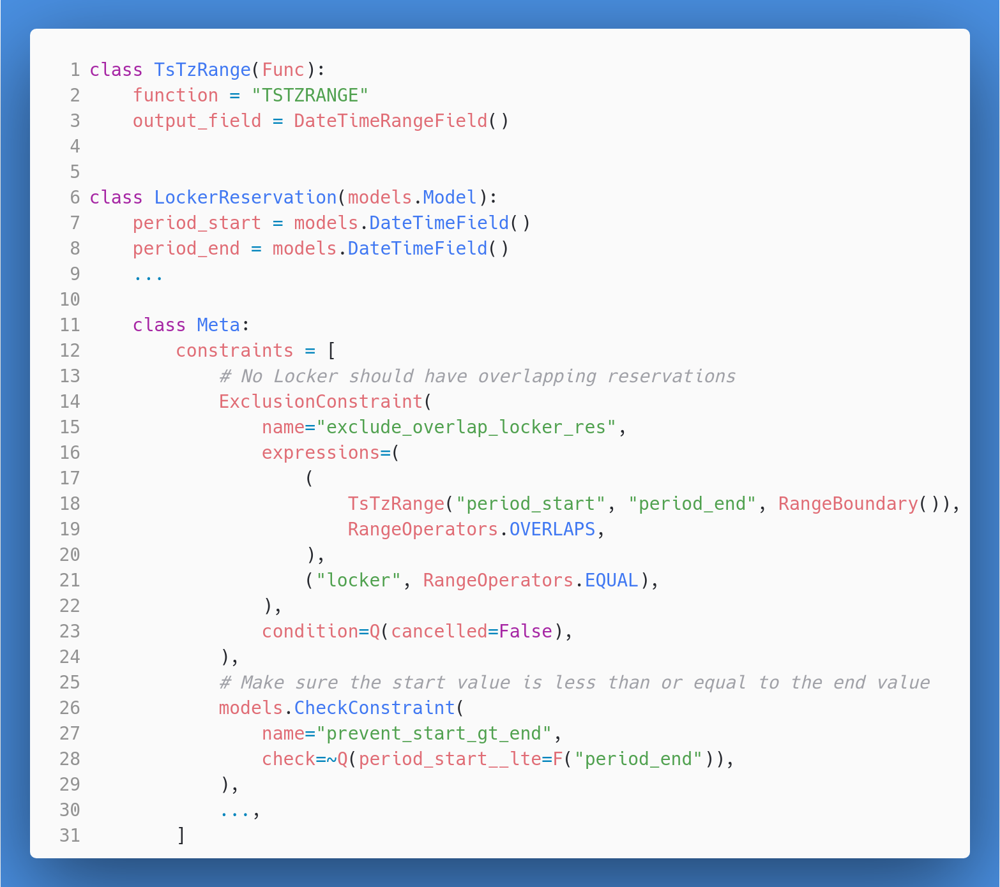 <!-- .element: style="max-height:450px" -->
#### Model Constraint Comparison - range field - 1 field stores the lower, upper, and boundary information - DB knows these are all related - By default, Postgres won't let you use larger value in lower position - salary_range = $140,000 to $200,000 🤑 - event_dates = 2022/10/16 to 2022/10/21 😎
#### Model Constraint Comparison - range field 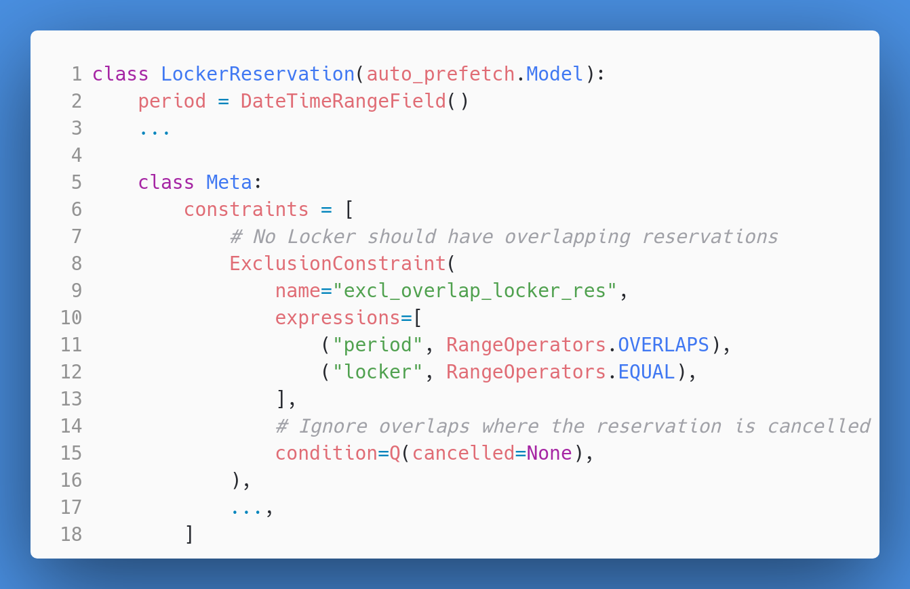 <!-- .element: style="max-height:450px" -->
#### Query Comparison - separate fields - Queries have to include both fields - Often unintuitive in which order lookups are used
#### Query Comparison - separate fields 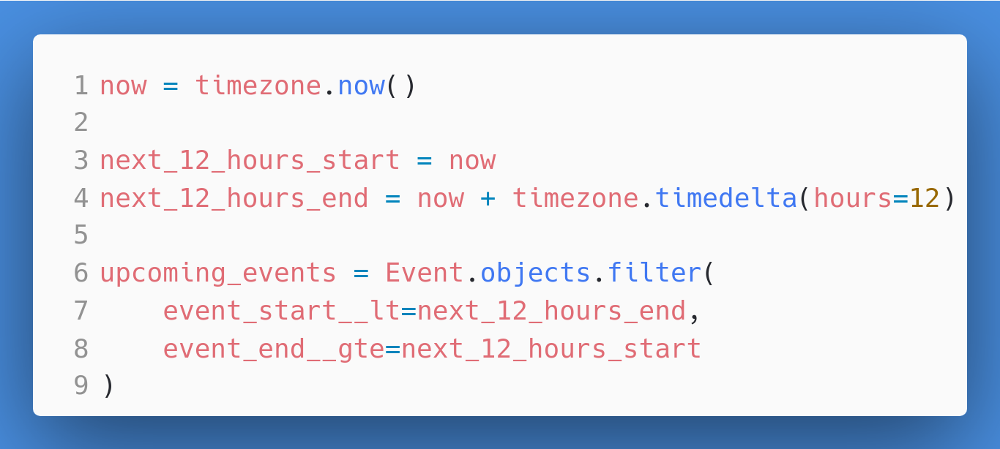 <!-- .element: style="max-height:450px" -->
#### Query Comparison - separate fields 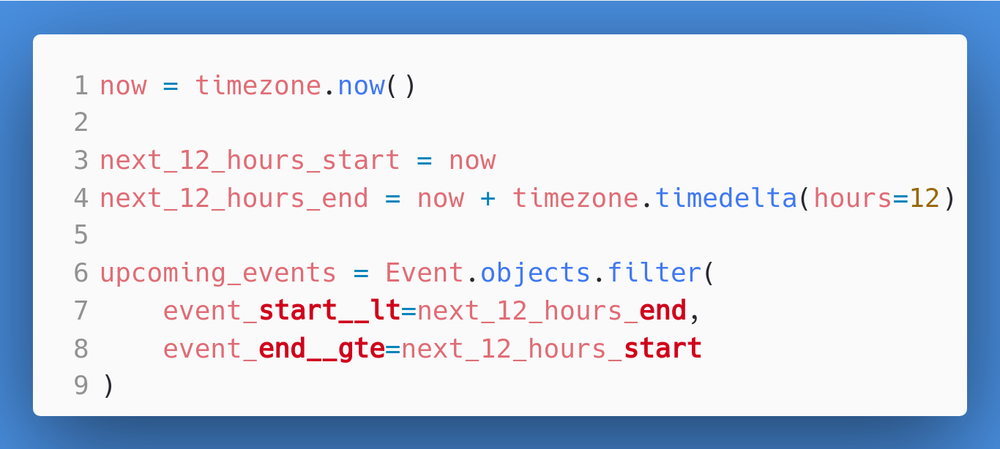 <!-- .element: style="max-height:450px" -->
#### Query Comparison - range field - Use a single, intuitive lookup
#### Query Comparison - range field 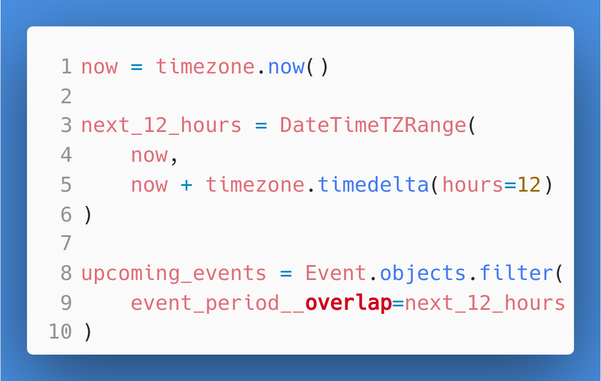 <!-- .element: style="max-height:450px" -->
## Terminology Going back to Elementary School (but no tests - I promise) <!-- .element: style="max-height:350px" -->
## Terminology - Ranges = Intervals - Inclusive = Closed - Exclusive = Open
##### Inclusive vs Exclusive 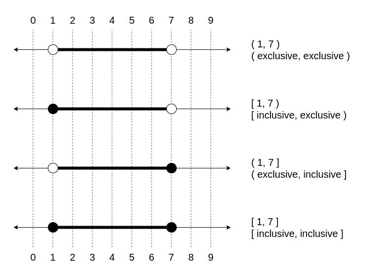 <!-- .element: style="max-height:400px" -->
##### Inclusive vs Exclusive 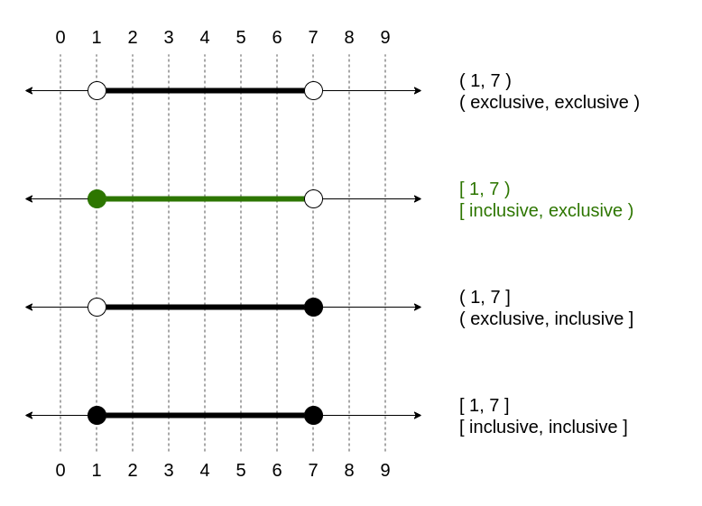 <!-- .element: style="max-height:400px" -->
##### Inclusive vs Exclusive <br> Another way to look at this [1, 3] = 1 **≤** *x* **≤** 3 [1, 3) = 1 **≤** *x* **<** 3 (1, 3] = 1 **<** *x* **≤** 3 (1, 3) = 1 **<** *x* **<** 3
#### *Range* Overlaps *Range* <img src="img/RangeLookups-range overlaps range.png" height="20%" alt="Visual explanation of inclusive vs exclusive intervals"> <!-- .element: style="max-height:450px" -->
#### *Range* Contains *Element* <img src="img/RangeLookups-range contains element.png" height="20%" alt="Visual explanation of inclusive vs exclusive intervals"> <!-- .element: style="max-height:450px" -->
#### *Range* Contains *Range* <img src="img/RangeLookups-range contains range.png" height="20%" alt="Visual explanation of inclusive vs exclusive intervals"> <!-- .element: style="max-height:450px" -->
#### *Element* Contained By *Range* <img src="img/RangeLookups-element contained_by range.png" height="20%" alt="Visual explanation of inclusive vs exclusive intervals"> <!-- .element: style="max-height:450px" -->
#### *Range* Contained By *Range* <img src="img/RangeLookups-range contained_by range.png" height="20%" alt="Visual explanation of inclusive vs exclusive intervals"> <!-- .element: style="max-height:450px" -->
#### *Range* Adjacent To *Range* <img src="img/RangeLookups-range adjacent_to range.png" height="20%" alt="Visual explanation of inclusive vs exclusive intervals"> <!-- .element: style="max-height:450px" -->
#### *Range* Fully Less Than *Range* <img src="img/RangeLookups-range fully_lt range.png" height="20%" alt="Visual explanation of inclusive vs exclusive intervals"> <!-- .element: style="max-height:450px" -->
#### *Range* Fully Greater Than *Range* <img src="img/RangeLookups-range fully_gt range.png" height="20%" alt="Visual explanation of inclusive vs exclusive intervals"> <!-- .element: style="max-height:450px" -->
#### psycopg2.extras Provides tools for 'translation' - NumericRange - Postgres: int4range, int8range, numrange - Django: IntegerRangeField, BigIntegerRangeField, DecimalRangeField - DateRange - Postgres: daterange - Django: DateRangeField
#### psycopg2.extras (cont'd) Provides tools for 'translation' - DateTimeRange - Postgres: tsrange - Django: DateTimeRangeField (naive dt 💩) - DateTimeTZRange - Postgres: tstzrange - Django: DateTimeRangeField
#### Defining Range Fields in Django - Using psycopg2.extras classes - Bounds default to "`[)`" - Can be changed for non-discrete range fields with `default_bounds` - (DateTimeRangeField and DecimalRangeField) - Fields also accept tuples as input if no bounds information is necessary 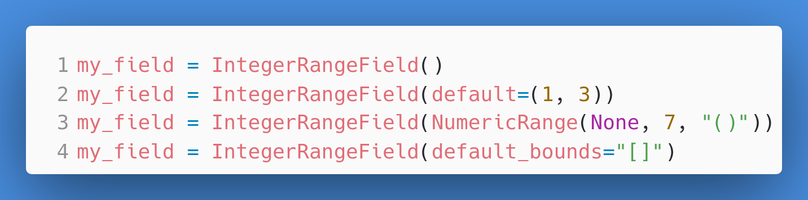 <!-- .element: style="max-height:450px" -->
#### Lookups based on range bounds - **`startswith`**: filters on lower bound - **`endswith`**: filters on upper bound - **`isempty`**: filters on empty instances - **`lower_inf`**: unbounded (infinite) or bounded lower bound - e.g.: `date.min` - **`upper_inf`**: unbounded (infinite) or bounded upper bound - e.g.: `date.max` - **`lower_inc`**: filters on inclusive or exclusive lower bounds - **`upper_inc`**: filters on inclusive or exclusive upper bounds
#### Lookups based on range bounds 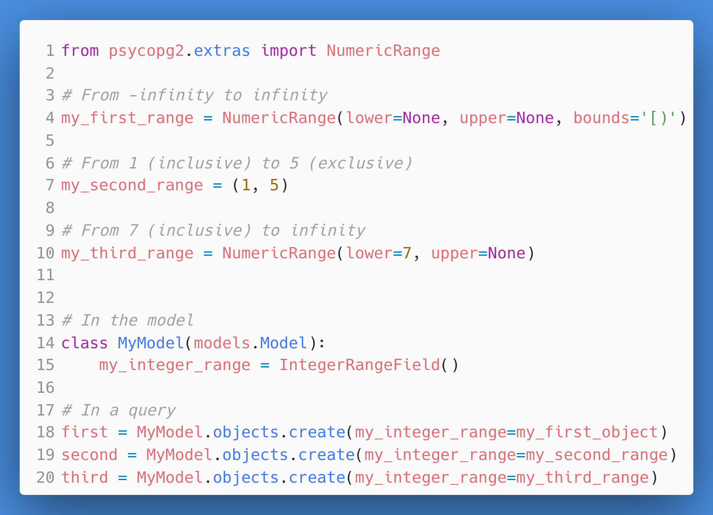 <!-- .element: style="max-height:450px" -->
#### Lookups based on range bounds 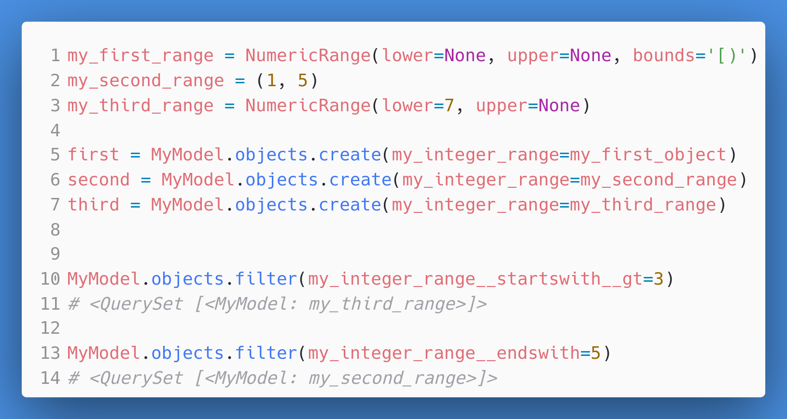 <!-- .element: style="max-height:450px" -->
#### Creating your own range types > "every data type that supports a btree operator class (that is, a way of ordering any two given values) can be used to create a range type." - PostgreSQL 14 Administration Cookbook *Example: GenericIPAddressField (postgres' `inet`) can be extended to create range of IP Addresses*
#### Indexing Stick with GiST or B-Tree
#### Example Project 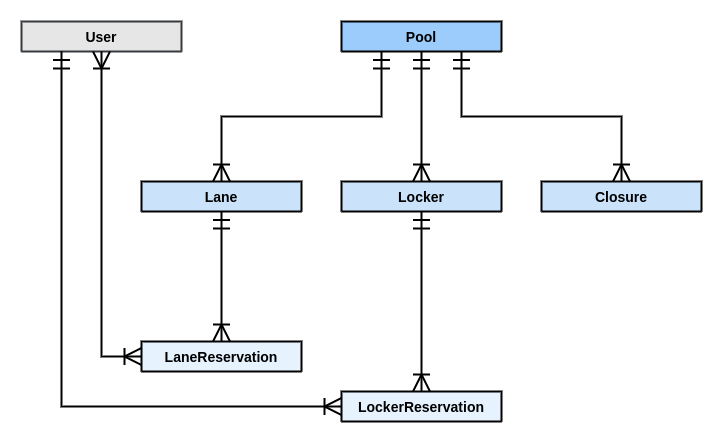 <!-- .element: style="max-height:450px" -->
#### Example Project 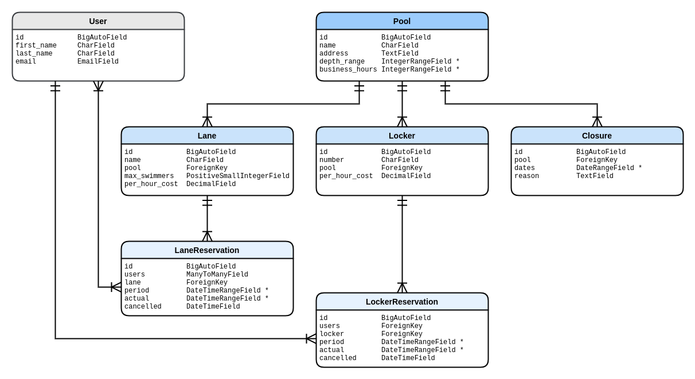 <!-- .element: style="max-height:450px" -->
#### Pitfalls DateTimeRangeField in Admin 
#### Pitfalls Trying to use `lower` and `upper` as callables - They aren't. - You can use `Lower` and `Upper` database functions in queries - You can use `startswith` and `endswith` lookups
#### Pitfalls Trying to use **`F()`** with the psycopg2.extra classes They aren't Django classes! May have to use `Cast` to convert to a Django range field
#### Resources - [psycopg2.extras](https://www.psycopg.org/docs/extras.html) - [This talk & Example Project](https://github.com/jacklinke/home-on-the-range-with-django) - [django-range-merge](https://github.com/jacklinke/django-range-merge/) - use `range_merge` aggregate with Django - [django-generate-series](https://github.com/jacklinke/django-generate-series) - create sequences with Django's ORM
#### Final thought A man works hard to name an interval equal to 24 hours... ...so he calls it a day.